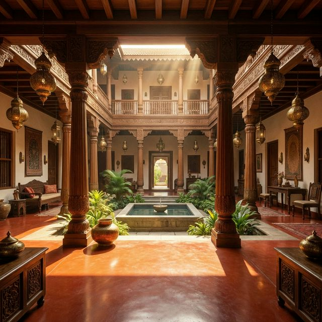

Heritage Courtyard
The traditional Indian courtyard home is designed around a central open-to-sky space that brings natural light, ventilation, and a sense of calm to the entire house. Featuring intricately hand-carved teak wood columns, rich red oxide or Athangudi tile flooring, and deep verandas (thinnai), these homes breathe the soul of Indian heritage while providing highly functional spatial flow.
